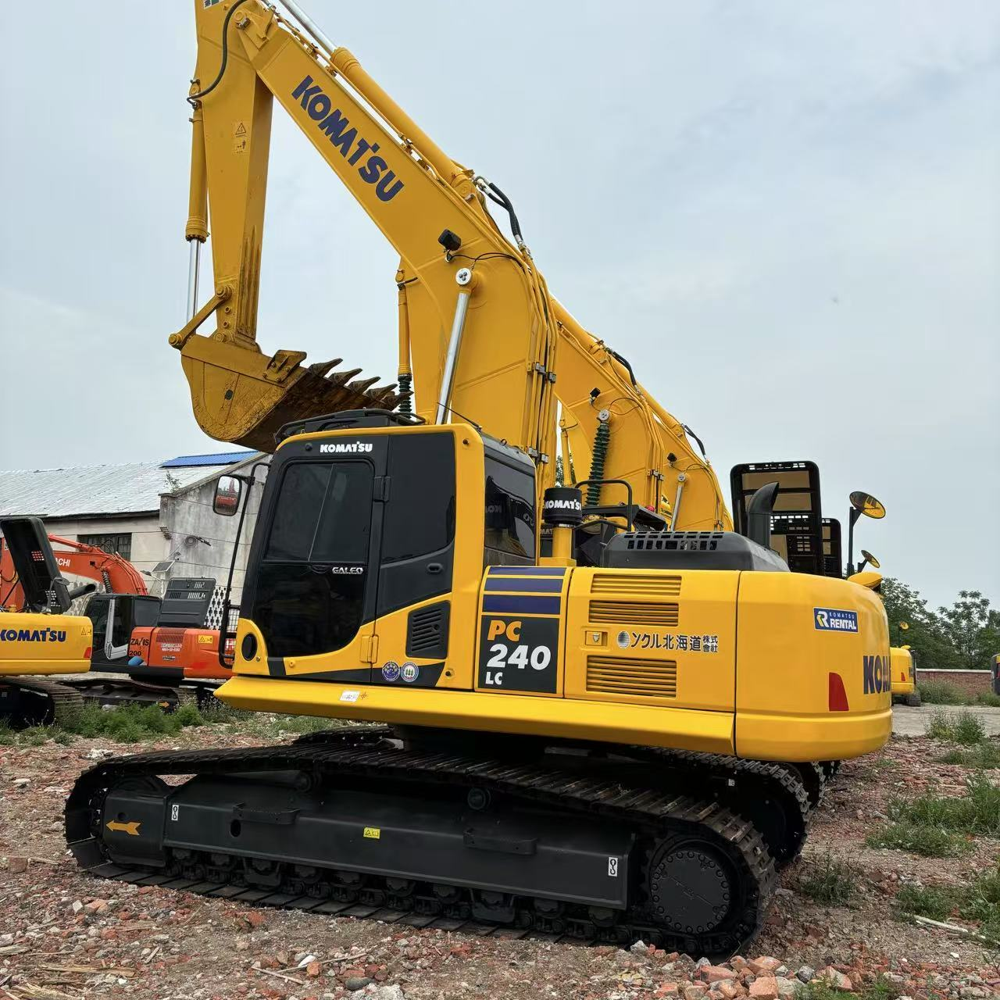

Refurbished Komatsu PC240 Excavator
The Komatsu PC240 is a highly capable and efficient hydraulic crawler excavator that is designed for a variety of applications, including construction, landscaping, demolition, and material handling. Known for its powerful performance, durability, and fuel efficiency, the PC240 is an excellent choice for those looking to optimize their fleet while keeping operational costs in check.
Honestly, it's almost impossible to buy a brand new excavator from China. They either don't exist or are made in China. If a Chinese seller tells you their Caterpillar/Komatsu/Volvo/Kobelco/Hitachi is brand new, they're lying. Therefore, a refurbished excavator is your best bet.

Here are the detailed specifications for a refurbished Komatsu PC240LC-8 or PC240LC-10 excavator:
Operating Weight and Dimensions
- Operating Weight: 23,500–25,000 kg
- Overall Length: ~10.3–10.6 meters
- Overall Width: ~3.0–3.2 meters
- Overall Height: ~3.2 meters
- Tail Swing Radius: ~3.2–3.3 meters
- Ground Clearance: ~470–500 mm
- Track Width: 600–700 mm standard
Engine and Powertrain
- Engine Model: Komatsu SAA6D107E-1 (Tier 3 compliant)
- Rated Power Output: ~177–188 hp (132–140 kW) @ 2,000 rpm
- Maximum Torque: ~800–850 Nm
- Fuel Tank Capacity: ~400–450 liters
- Travel Speed: 3.4–5.5 km/h
- Swing Speed: ~10 rpm
- Gradeability: Up to 70% (35°)
Hydraulic System
- Main Pump Type: Closed Center Load Sensing (CLSS) axial piston pumps
- Flow Rate: ~2 × 220–240 L/min
- System Pressure: Up to 34.3 MPa
- Hydraulic Oil Capacity: ~250 liters
- Boom Cylinder Bore: ~130 mm
- Arm Cylinder Bore: ~115 mm
- Bucket Cylinder Bore: ~105 mm
Performance Metrics
- Bucket Capacity: 1.0–1.4 m³ (SAE heaped)
- Max Digging Depth: ~6.7–7.0 meters
- Max Reach (Horizontal): ~10.2–10.5 meters
- Max Dump Height: ~6.8–7.0 meters
- Bucket Digging Force: ~160–170 kN
- Arm Digging Force: ~120–130 kN
Cab and Operator Features
- Cab Type: ROPS/FOPS certified
- Display: LCD monitor with diagnostics and fuel tracking
- Controls: Electro-hydraulic joysticks with customizable sensitivity
- Comfort: Air suspension seat, climate control, low vibration cab
- Visibility: Rear-view camera, LED work lights, wide glass area
Smart Features and Efficiency
- Fuel Efficiency: Electronic engine control + auto idle shutdown
- Emissions Control: Tier 3 compliant (no DPF or SCR)
- Telematics Ready: KOMTRAX system for remote diagnostics and fleet tracking
- Attachment Memory: Preset hydraulic settings for multiple tools
Attachments Compatibility
- Standard Bucket: 1.0–1.4 m³
- Optional Tools: Hydraulic breaker, demolition shear, compactor, ripper
- Quick Coupler: Hydraulic or manual options available
Refurbishment Scope
Refurbished PC240 units typically include:
- Engine Overhaul: Turbocharger, injectors, seals, cooling system
- Hydraulic Restoration: Pump recalibration, valve block testing, hose replacement
- Electrical Diagnostics: Monitor, sensors, wiring harness
- Cab Reconditioning: Seat, joysticks, HVAC, repainting
- Structural Repairs: Boom/bucket welding, bushing replacement, undercarriage rebuild
Overview of the Komatsu PC240 Excavator
The Komatsu PC240 is part of Komatsu’s highly regarded range of hydraulic excavators, designed to handle a broad spectrum of tasks in demanding environments. Its performance, ease of maintenance, and operator comfort make it one of the most popular machines in the medium-size excavator category.
Key Specifications of the Komatsu PC240 Excavator
-
Operating Weight: Approximately 24,000 kg (52,910 lbs)
-
Engine Power: 130 kW (174 hp)
-
Max Digging Depth: 6.7 meters (22 feet)
-
Max Reach: 9.8 meters (32 feet)
-
Bucket Capacity: 1.2 to 1.5 cubic meters
-
Travel Speed: 5.5 km/h (3.4 mph)
The Komatsu PC240 is designed to provide strong lifting power, smooth operation, and versatility, making it suitable for a variety of job sites, from road construction to utility trenching.
Key Features of the Komatsu PC240 Excavator
Powerful and Efficient Engine
The Komatsu PC240 is equipped with a 174 hp (130 kW) engine, delivering the power needed for tough excavation tasks. This engine is designed for maximum efficiency and performance, while minimizing fuel consumption.
-
Fuel Efficiency: The engine's fuel-saving features reduce the overall cost of operation, making it ideal for large-scale projects that require long operating hours.
-
Emission Compliance: The engine is built to comply with modern emission standards, helping reduce environmental impact while maintaining power.
Hydraulic System
The PC240 features an advanced hydraulic system that ensures reliable and efficient performance under a wide range of conditions.
-
Load-Sensing Hydraulics: The machine automatically adjusts hydraulic power according to the workload, optimizing both performance and fuel efficiency.
-
High Productivity: The hydraulic system enables the operator to perform tasks with high precision and efficiency, improving overall productivity on the job site.
Undercarriage and Durability
The PC240 comes equipped with a robust undercarriage that provides stability and durability for tough environments.
-
Heavy-Duty Undercarriage: The undercarriage is reinforced to withstand challenging terrain and heavy workloads, reducing wear and tear over time.
-
Track Longevity: Designed for extended track life, the PC240 is built to perform consistently even under high stress.
Operator Comfort and Safety
Komatsu is known for creating machines that prioritize operator comfort and safety, and the PC240 is no exception.
-
Spacious Cabin: The cabin is designed with ample space, a comfortable seat, and an intuitive control layout to enhance productivity and reduce operator fatigue.
-
Safety Features: The PC240 comes equipped with various safety features, such as a rearview camera, ROPS (Roll-Over Protective Structure), and well-lit work areas to ensure the operator’s safety at all times.
Why Choose a Refurbished Komatsu PC240 Excavator?
There are several advantages to choosing a refurbished Komatsu PC240 over purchasing a new one. Here are some key reasons why this can be a smart business decision:
Significant Cost Savings
One of the main benefits of choosing a refurbished Komatsu PC240 is the cost savings. New heavy equipment can be expensive, and purchasing a refurbished unit allows businesses to access high-quality machinery at a fraction of the price.
-
Lower Initial Investment: A refurbished PC240 can cost 30% to 50% less than a brand-new model, depending on the machine's age, condition, and the scope of refurbishment.
-
Financing Options: Many dealers offer financing plans for refurbished machines, allowing businesses to spread out the cost and manage their cash flow better.
Thorough Refurbishment Process
When you purchase a refurbished Komatsu PC240, you are investing in a machine that has been thoroughly inspected and restored to its original condition. Refurbishment ensures that the excavator will perform like new, with all major components checked and repaired if needed.
-
Engine Overhaul: The engine is inspected, and any faulty parts are replaced, ensuring reliable and smooth operation.
-
Hydraulic System Restoration: The hydraulic components are tested for leaks and pressure inconsistencies, and any damaged components are replaced.
-
Undercarriage Inspection: The tracks and undercarriage are thoroughly checked, with worn or damaged parts being replaced to ensure long-term durability.
Proven Performance and Reliability
Komatsu machines are known for their reliability and long lifespan, and the PC240 is no different. A refurbished PC240 offers the same performance as a new unit but at a significantly reduced price.
-
Long-Term Durability: With regular maintenance, a refurbished PC240 can deliver years of dependable service.
-
Proven Design: The PC240 has a proven track record of excellent performance in a wide range of industries, including construction, roadwork, and mining.
Sustainability Benefits
Choosing refurbished equipment helps reduce the environmental impact associated with manufacturing new machines. By buying a refurbished PC240, you contribute to sustainability efforts and reduce the demand for raw materials and energy used in the production of new equipment.
-
Lower Environmental Impact: Refurbishing and reusing equipment helps reduce waste and conserve resources, making it a more sustainable choice.
-
Recycling Parts: Many parts of the machine are reused or recycled during the refurbishment process, helping minimize environmental waste.
Maintenance Tips for the Komatsu PC240 Excavator
Proper maintenance is crucial for keeping your Komatsu PC240 in peak operating condition. Below are some essential maintenance tips to ensure long-term reliability:
Engine and Hydraulic Maintenance
-
Oil and Filter Changes: Regularly change the engine oil and hydraulic fluid, as recommended by the manufacturer, to maintain the machine’s efficiency.
-
Filter Replacement: Replace engine and hydraulic filters at regular intervals to avoid contamination and system damage.
Undercarriage and Tracks
-
Track Inspections: Regularly inspect the tracks for wear, cracks, or damage. Replace worn-out parts promptly to avoid further damage.
-
Track Tension: Ensure the track tension is correct, as too tight or too loose tracks can cause premature wear and reduce machine stability.
Cabin and Comfort Features
-
Cabin Cleaning: Keep the cabin clean and free of debris to enhance operator comfort and safety.
-
Check Safety Systems: Regularly check the rearview camera, ROPS, and other safety systems to ensure they are functioning correctly.
Conclusion
The Komatsu PC240 is a highly versatile and durable excavator, designed to handle various tasks in challenging work environments. By choosing a refurbished Komatsu PC240, businesses can save on costs while still enjoying the same reliability, power, and performance as a new machine.
With a rigorous refurbishment process, lower initial investment, and the proven durability of Komatsu equipment, a refurbished PC240 is an excellent choice for companies looking to maximize their investment. Proper maintenance will ensure that your Komatsu PC240 continues to deliver efficient, productive, and reliable performance for many years to come.
Our Commitment
- 2 years / 4000 hours warranty.
- EPA certified.
- No sweatshop labor.
Contacts

- [email protected]
- Youtube Instagram Facebook
- Navigation: G206 (Sishu Bridge) in Changfeng County, Hefei City, Anhui Province, 200 meters north to the east